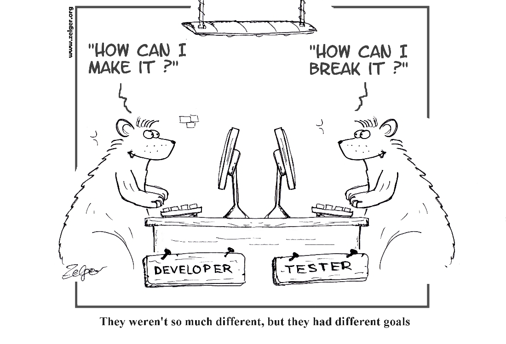
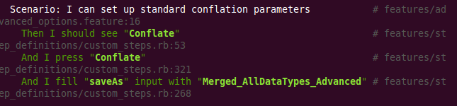
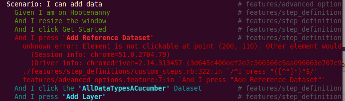
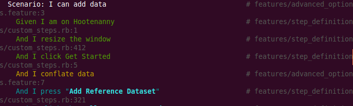
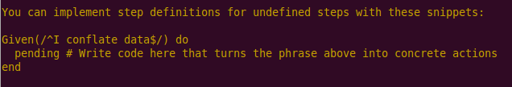

JavaScript Testing
Tools
- ESLint
- Mocha
- Cucumber and Capybara

ESLint
What is ESLint?
- ESLint is an open source project with the goal to provide a pluggable linting utility for JavaScript
- ESLint Home Page
What does ESLint do?
- Code linting is a type of static analysis that is used to find problematic patterns or code that doesn't adhere to certain style guidelines, or rules.
- JavaScript does not have a compiler, so JavaScript is typically executed in order to find syntax or other errors.
- ESLint allows developers to discover problems with their JavaScript code without executing it!
- Rules are standalone and can be turned on or off, and set as a warning or error.
How do you run ESLint?
- ESLint is written using Node.js to provide a fast runtime environment and easy installation via npm.
- Installation:
npm i -g eslint - Execution:
eslint file1.js file2.js - Execution (Directory):
eslint lib/**
Examples of Rules
- Full List
- semi-spacing: enforce spacing after semicolons
- eqeqeq: require the use of === and !==
- no-loop-func: disallow function declarations and expressions inside loop statements
ESLint Demo
ESLint DemoMocha
What is Mocha JS?
- Mocha is a feature-rich JavaScript test framework running on Node.js and in the browser.
- Mocha tests run serially, allowing for flexible and accurate reporting, while mapping uncaught exceptions to the correct test cases.
- Mocha JS Home Page
How do you run Mocha?
- Installation:
npm install -g mocha - Execution:
mocha - It is that simple in the context of iD since it comes packaged with preset tests. For more on how to build from scratch, visit the Mocha Home Page
Mocha Synchronous Code Example
describe('Array', function() {
describe('#indexOf()', function() {
it('should return -1 when the value is not present', function() {
[1,2,3].indexOf(5).should.equal(-1);
[1,2,3].indexOf(0).should.equal(-1);
});
});
});
Mocha Asynchronous Code Example
describe('User', function() {
describe('#save()', function() {
it('should save without error', function(done) {
var user = new User('Luna');
user.save(function(err) {
if (err) throw err;
done();
});
});
});
});
Thoughts on Mocha
- There is going to be the steepest learning curve if you have not done unit testing before, or are new to JavaScript.
- But don't be afraid! This is a great opportunity to learn not only something new, but a valuable skill for your career!
- The documentation is great, and there are numerous blog posts that will help us all get up to speed moving forward.
Cucumber with Capybara
What is Cucumber and Capybara?
What do Cucumber and Capybara test?
- Cucumber and Capybara test user interactions with the web browser and written code.
How are Cucumber Tests Structured?
- Tests and Steps are located in the features directory
- Steps are found in a folder named step_definitions in a file named custom_steps.rb
- Tests are in the features folder and named with the extension .feature
- A supportdirectory contains a file named env.rb which contains configuration information
How do you run Cucumber?
cucumber features/authenticate_user.feature
cucumber features/*
BDD Ideal Cucumber Scenario
Feature: Conflate feature with stats
Scenario: I can conflate the AllDataTypes data
Given I am on Hootenanny
And I add the "AllDataTypesACucumber" Reference Dataset
- reads like a use case
- written by a business analyst
- understandable by a user
Cucumber Scenario written by web developers
Feature: Conflate feature with stats
Scenario: I can conflate the AllDataTypes data
Given I am on Hootenanny
And I resize the window
And I click Get Started
And I press "Add Reference Dataset"
And I click the "AllDataTypesACucumber" Dataset
And I press "Add Layer"
Then I wait 30 "seconds" to see "AllDataTypesACucumber"
- more granular
- step-by-step buttonology
- but probably still acceptable
Cucumber Scenario gone off the rails
Scenario: Filter Bookmarks
Then I select the "sprocket" div
And I click on the "Review Bookmarks" option in
the "settingsSidebar"
Then I select the "reviewBookmarksFilterByMapIdDiv" div
Then I click the "mergedBookmarkTest" link
under "reviewBookmarksFilterByMapIdDiv"
- css details leaking up into the steps
- impossible to write or understand without using the UI inspector
- we know we're doing it wrong...
- ...but we'll get better
Implementing a custom step with Capybara
Step:
And I select the "File (osm)" option in
the "Select Import Type" combobox
Definition:
When(/^I select the "([^"]*)" option in the "([^"]*)" combobox$/)
do |opt, cb|
combobox = page.find(:css, 'input[placeholder="' + cb + '"]')
combobox.find(:xpath, '..').find('.combobox-caret').click
page.find('div.combobox').find('a', :text=> opt).click
end
Another Example
You can use Ruby code in the step definition
Step:
Then the download file "export_conflated.zip" should exist
Definition:
Then(/^the download file "([^"]*)" should exist$/) do |file|
name = ENV['HOME'] + '/Downloads/' + file
expect( File.exists?(name) ).to be true
File.delete(name)
end
Cucumber in Action!

Successful Step
Unsuccessful Step
- If included, the screenshot plugin will capture UI at points of test failure.
- Currently included in Vagrant build of Hootenanny.
Missing Step
 Running Tests on MapEdit and Hootenanny
MapEdit
$: ~/mapedit-id$ npm test
iD@1.8.5 test /home/jsisskind/mapedit-id
eslint js/id && mocha-phantomjs test/index.html --ssl-protocol=tlsv1 && make && mocha-phantomjs test/index_packaged.html --ssl-protocol=tlsv1
This runs the entire node test suite, including eslint and mocha (with phantomJS).
Result
/home/jsisskind/mapedit-id/js/id/actions/change_preset.js
10:2 error Mixed spaces and tabs no-mixed-spaces-and-tabs
11:2 error Mixed spaces and tabs no-mixed-spaces-and-tabs
12:2 error Mixed spaces and tabs no-mixed-spaces-and-tabs
13:2 error Mixed spaces and tabs no-mixed-spaces-and-tabs
13:11 error Unexpected console statement no-console
14:17 error Unexpected console statement no-console
15:2 error Mixed spaces and tabs no-mixed-spaces-and-tabs
16:2 error Mixed spaces and tabs no-mixed-spaces-and-tabs
17:2 error Mixed spaces and tabs no-mixed-spaces-and-tabs
18:2 error Mixed spaces and tabs no-mixed-spaces-and-tabs
18:11 error ["source"] is better written in dot notation dot-notation
20:2 error Mixed spaces and tabs no-mixed-spaces-and-tabs
22:2 error Mixed spaces and tabs no-mixed-spaces-and-tabs
24:10 error Unnecessary semicolon no-extra-semi
/home/jsisskind/mapedit-id/js/id/id.js
1:20 error Strings must use singlequote quotes
2:18 error Strings must use singlequote quotes
/home/jsisskind/mapedit-id/js/id/renderer/geojson_layer.js
19:13 error Strings must use singlequote quotes
19:48 error Strings must use singlequote quotes
20:13 error Strings must use singlequote quotes
20:56 error Strings must use singlequote quotes
21:13 error Strings must use singlequote quotes
21:54 error Strings must use singlequote quotes
22:13 error Strings must use singlequote quotes
22:68 error Strings must use singlequote quotes
23:13 error Strings must use singlequote quotes
23:69 error Strings must use singlequote quotes
23:110 error Strings must use singlequote quotes
24:13 error Strings must use singlequote quotes
24:55 error Strings must use singlequote quotes
24:78 error Strings must use singlequote quotes
131:50 error Missing semicolon semi
/home/jsisskind/mapedit-id/js/id/services/taginfo.js
113:43 error Expected '===' and instead saw '==' eqeqeq
113:45 error Strings must use singlequote quotes
122:50 error Strings must use singlequote quotes
122:64 error Strings must use singlequote quotes
125:95 error Missing semicolon semi
126:67 error Strings must use singlequote quotes
/home/jsisskind/mapedit-id/js/id/ui/dgcarousel.js
245:55 error Strings must use singlequote quotes
✖ 38 problems (38 errors, 0 warnings)
npm ERR! Test failed. See above for more details.
Hootenanny
make testxvfb-run --server-args="-screen 0, 1024x768x24" cucumber --format pretty --strict features/osm_tds_switcher.featureWhat's Next?
- Requirement to meet 80% code coverage.
- For Hootenanny, we use Istanbul for code coverage, but we can focus on that later.
- Also need to run nightly tests to ensure (a) tests are running properly, and (b) new code does not break previously working tests.